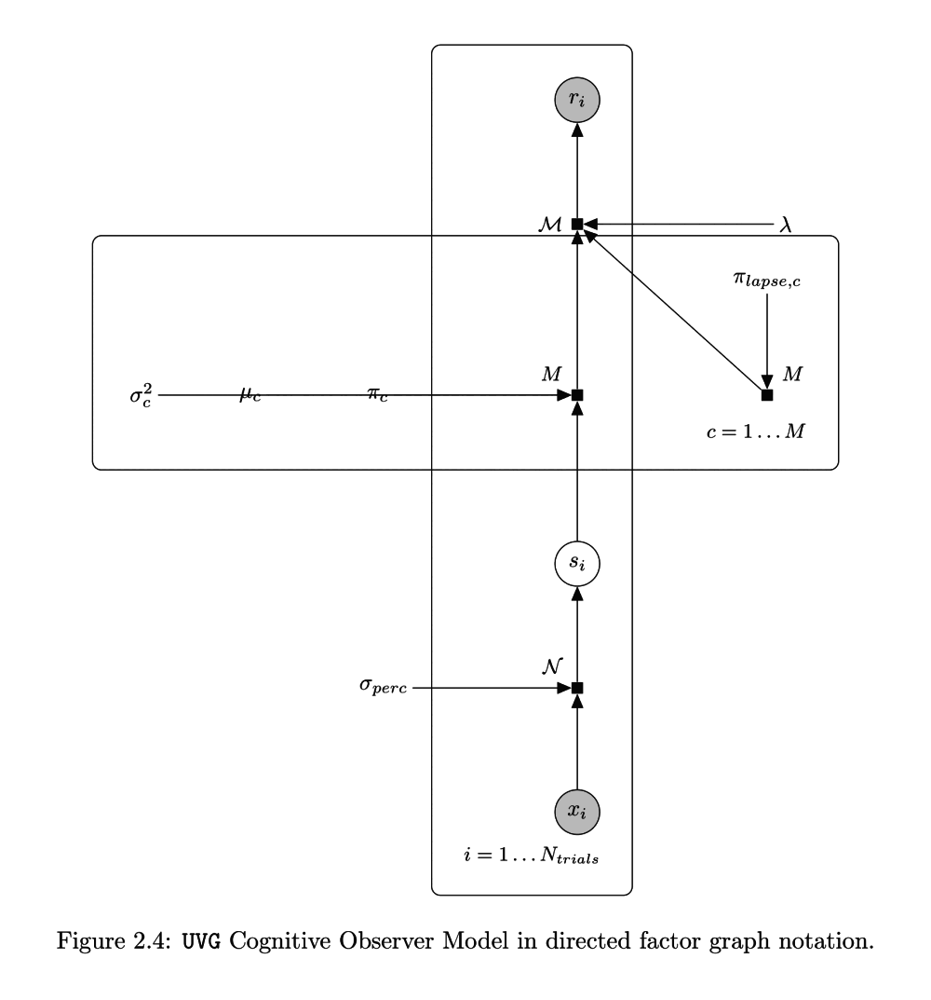
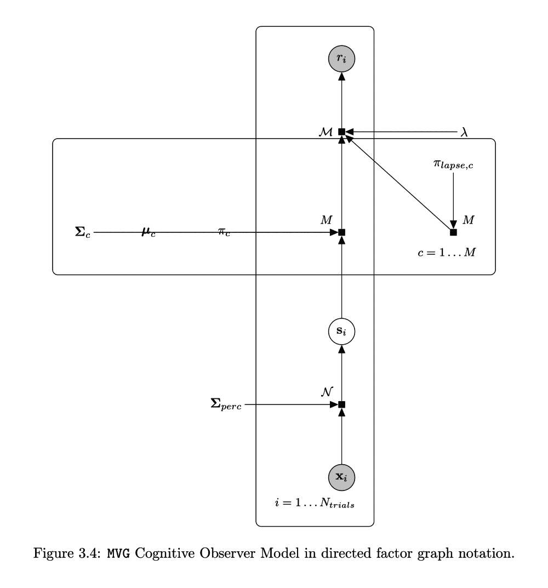
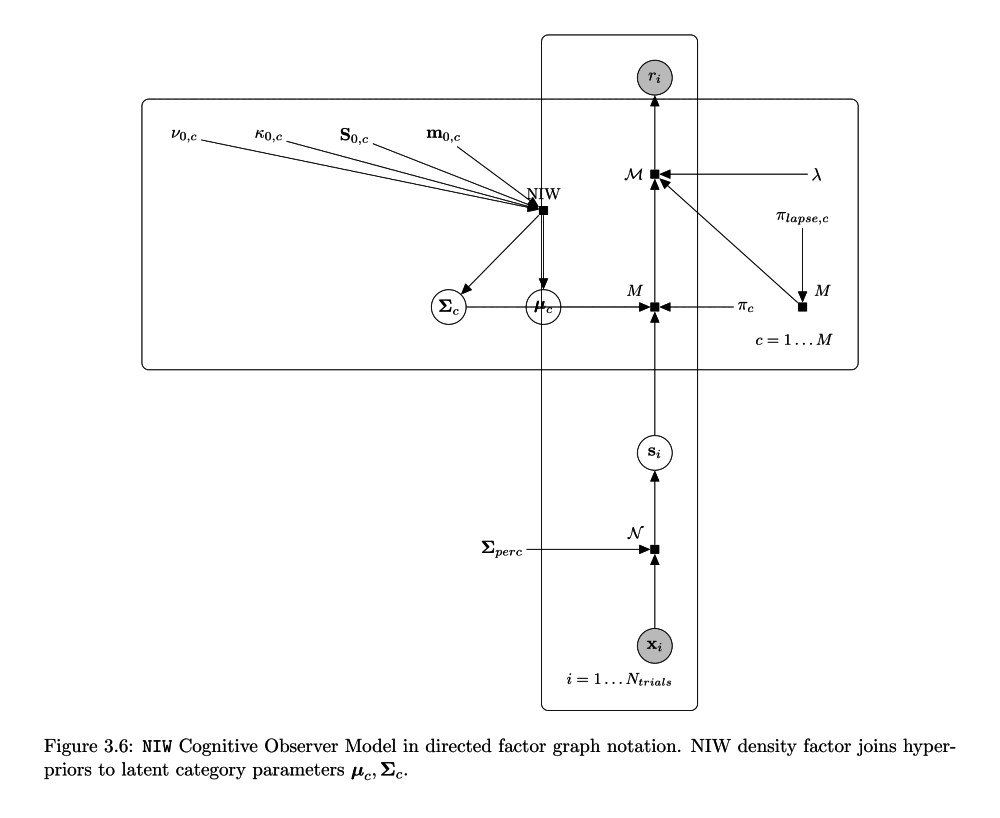
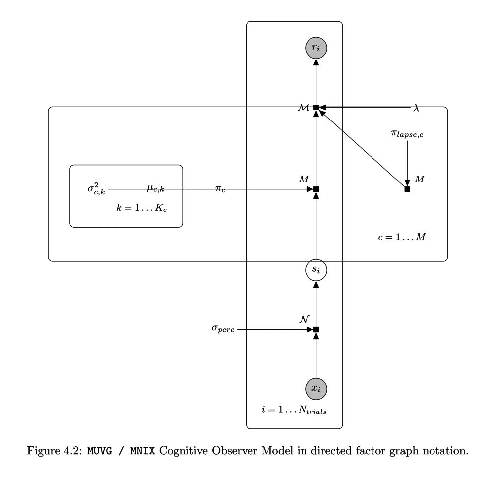
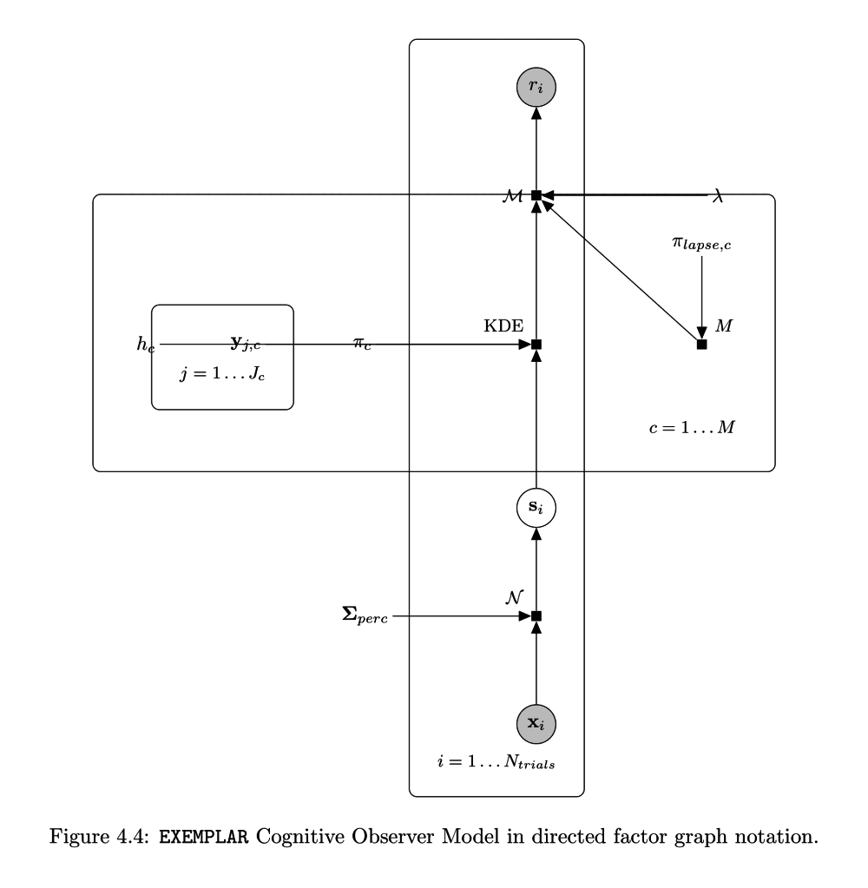
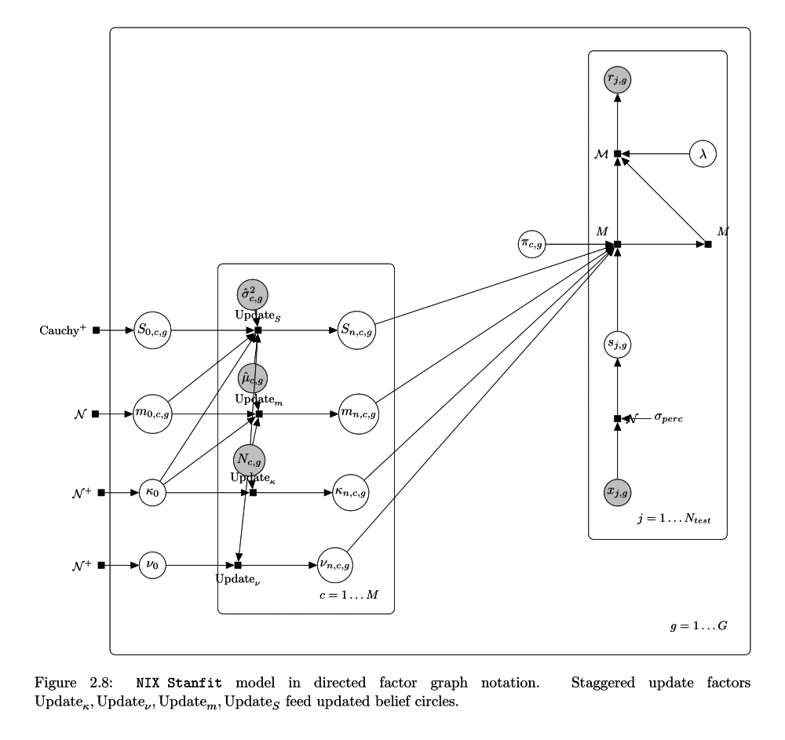
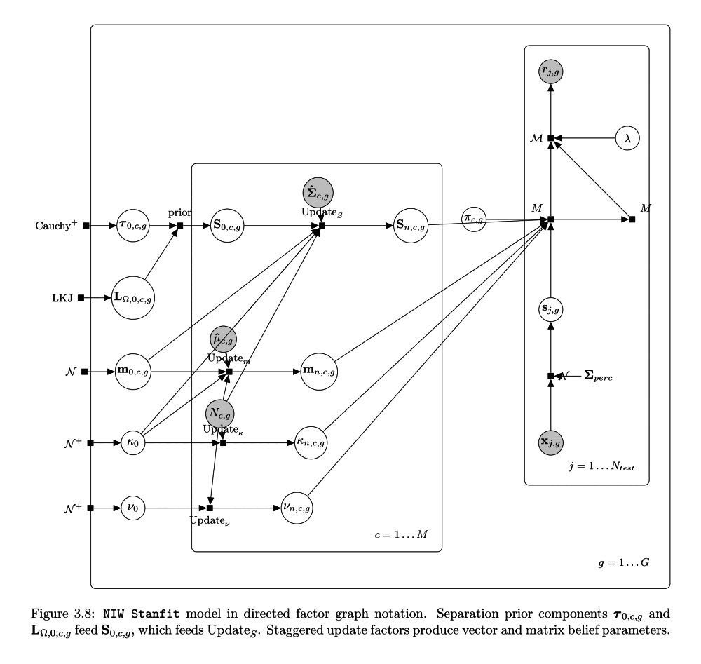
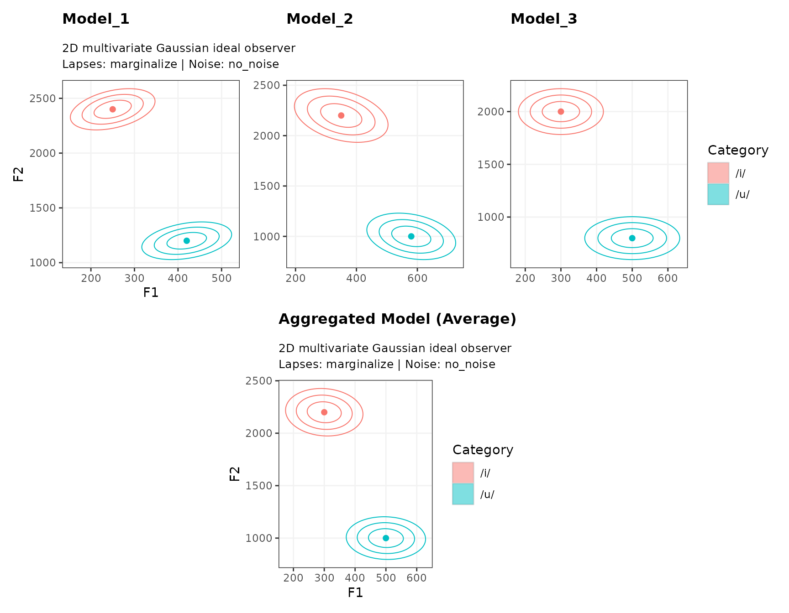

S7 Class Architecture, Constructors, and Workflows
T. Florian Jaeger
Source:vignettes/s7-class-structure-and-workflows.Rmd
s7-class-structure-and-workflows.Rmd1. Introduction and The S7 Object Model
The MVBeliefUpdatr package provides computational cognitive models of category representation, multidimensional perceptual decision making, and Bayesian belief updating. Version 1.0 of the package redesigns the underlying architecture around R’s new S7 object-oriented system (PEP / R Consortium object system).
In previous versions, category distributions and cognitive models were represented as nested tibbles with list-columns of vectors and matrices. While accessible for simple data-wrangling pipelines, weakly typed tabular models suffered from several limitations:
- Parameter matrices and dimensions were validated only at the point of computation, making errors hard to trace.
- Model metadata, cue labels, and decision rules were loosely coupled with distributional parameters.
- Method dispatch was split across ad-hoc S3 methods, legacy S4 classes, and family-specific wrapper functions.
The S7 class architecture replaces this with strongly typed, validated, and composable objects:
-
Category Representations
(
MVBU_CategoryRepresentation): Distributional beliefs about a single category in continuous multidimensional cue space (e.g., Gaussian [UVG/MVG/MUVG], Normal-Inverse-Wishart [NIW], Normal-Inverse- [NIX/MNIX], or exemplar sets). -
Category Representation Templates
(
MVBU_CategoryRepresentationTemplate): Sets of category representations sharing a common cue space and coordinate system. -
Cognitive Decision Models
(
MVBU_CognitiveModel): Complete observer or adaptor models composing a category template with category priors , decision rules (e.g., criterion, proportional, sampling), internal perceptual noise, and lapse behaviors. -
Collections of Cognitive Models
(
MVBU_ModelList): Strongly typed, ordered collections of cognitive decision models across experimental conditions, exposure blocks, or updating trajectories. -
Stan Input & Fit Objects
(
MVBU_Staninput,MVBU_Stanfit,MVBU_StanfitPosterior): Typed data bundles and Bayesian posterior fits for incremental belief-updating models.
Underpinning these classes is the Model Family System
(MVBU_Family): a registry pattern that decouples
the mathematical functions governing category density evaluation,
observation sampling, and expected moment calculations from object
definitions.
Companion Vignettes
For Bayesian model fitting, post-processing, and model comparison workflows, see the vignette Fitting and Working with MVBeliefUpdatr Stanfit Models.
For visualization workflows corresponding to these objects, see the vignette: Visualizing Categories, Categorization Functions, and Belief Updating.
For extending the package with custom distributional families, see the vignette: Extending MVBeliefUpdatr: Adding Model Families.
For legacy code compatibility, see the vignette: Backward Compatibility: Working with Legacy Code.
2. Quick Exploration with example_*() Functions
To immediately inspect the structure, labels, and parameters of any
class in the package without manually assembling matrices,
MVBeliefUpdatr provides a suite of lightweight
example_*() constructors.
Example Category Representations
Single-category representations can be instantiated for any supported family:
# Multivariate Gaussian representation (2D: F1, F2)
rep_mvg <- example_category_representation("MVG")
rep_mvg
#> <MVBeliefUpdatr::MVG_CategoryRepresentation>
#> Category: /b/
#> Cues (1): VOT
#> mu: 8.397
#> Sigma: 23.86
# Multivariate Univariate Gaussian representation (2D: independent variances)
rep_muvg <- example_category_representation("MUVG")
rep_muvg
#> <MVBeliefUpdatr::MUVG_CategoryRepresentation>
#> Category: /b/
#> Cues (2): VOT, f0_semitones
#> mu: c( 8.478, -1.368)
#> sigma2: c(23.20, 14.69)
# Normal-Inverse-Wishart belief distribution (2D)
rep_niw <- example_category_representation("NIW")
rep_niw
#> <MVBeliefUpdatr::NIW_CategoryRepresentation>
#> Category: /b/
#> Cues (1): VOT
#> kappa: 1
#> nu: 3
#> m: 8.397
#> S: 23.86
# Multivariate Normal-Inverse-Chi-Squared belief distribution (2D)
rep_mnix <- example_category_representation("MNIX")
rep_mnix
#> <MNIX_CategoryRepresentation>
#> Category: /b/
#> Cues (2): VOT, f0_semitones
#> kappa: c(1, 1)
#> nu: c(4, 4)
#> m: c( 8.478, -1.368)
#> sigma2: c(11.601, 7.345)
# Non-parametric Exemplar representation (2D)
rep_ex <- example_category_representation("EXEMPLAR")
rep_ex
#> <MVBeliefUpdatr::Exemplar_CategoryRepresentation>
#> Category: /b/
#> Cues (1): VOT
#> Exemplars (17659 points):
#> [1] (9)
#> [2] (5)
#> [3] (15)
#> [4] (10)
#> [5] (17)
#> ...Family-specific example helpers are also available, such as
example_uvg_category_representation(),
example_mvg_category_representation(),
example_muvg_category_representation(),
example_niw_category_representation(),
example_mnix_category_representation(), and
example_exemplar_category_representation().
Example Category Representation Templates
Templates bind multiple category representations together into a shared space:
# 2-category vowel template (/i/, /u/)
tpl_mvg <- example_category_representation_template("MVG")
tpl_mvg
#> <MVBU_CategoryRepresentationTemplate>
#> Categories (6): /b/, /d/, /g/, /k/, /p/, /t/
#> Cues (1): VOT
#> Representations (6):
#> /b/: MVG(mu = 8.397, Sigma = 23.86)
#> /d/: MVG(mu = 13.81, Sigma = 77.64)
#> /g/: MVG(mu = 16.71, Sigma = 108.7)
#> /k/: MVG(mu = 54.04, Sigma = 418.8)
#> /p/: MVG(mu = 50.24, Sigma = 445.2)
#> /t/: MVG(mu = 60.48, Sigma = 476.4)
# Inspect the categories and cues in the template
get_category_labels(tpl_mvg)
#> [1] "/b/" "/d/" "/g/" "/k/" "/p/" "/t/"
get_cue_labels(tpl_mvg)
#> [1] "VOT"Example Cognitive Decision Models
Full decision models can be generated directly across all supported model families:
# Ideal Observer with MVG category representations
mod_observer <- example_mvg_ideal_observer()
mod_observer
#> <MVBeliefUpdatr::MVG_IdealObserver>
#> Categories (6): /b/, /d/, /g/, /k/, /p/, /t/
#> Cues (1): VOT
#> Decision rule: sampling
#> Category prior: /b/: 0.167, /d/: 0.167, /g/: 0.167, /k/: 0.167, /p/: 0.167, /t/: 0.167
#> Lapse rate: 0 (treatment: no_lapses)
#> Perceptual noise: none (treatment: no_noise)
#> Category representations (6):
#> /b/: MVG(mu = 8.397, Sigma = 23.86)
#> /d/: MVG(mu = 13.81, Sigma = 77.64)
#> /g/: MVG(mu = 16.71, Sigma = 108.7)
#> /k/: MVG(mu = 54.04, Sigma = 418.8)
#> /p/: MVG(mu = 50.24, Sigma = 445.2)
#> /t/: MVG(mu = 60.48, Sigma = 476.4)
# Ideal Observer with MUVG category representations
mod_muvg <- example_muvg_ideal_observer()
mod_muvg
#> <MVBeliefUpdatr::MUVG_IdealObserver>
#> Categories (6): /b/, /d/, /g/, /k/, /p/, /t/
#> Cues (2): VOT, f0_semitones
#> Decision rule: sampling
#> Category prior: /b/: 0.167, /d/: 0.167, /g/: 0.167, /k/: 0.167, /p/: 0.167, /t/: 0.167
#> Lapse rate: 0 (treatment: no_lapses)
#> Perceptual noise: none (treatment: no_noise)
#> Category representations (6):
#> /b/: MUVG(mu = vector(2), sigma2 = vector(2))
#> /d/: MUVG(mu = vector(2), sigma2 = vector(2))
#> /g/: MUVG(mu = vector(2), sigma2 = vector(2))
#> /k/: MUVG(mu = vector(2), sigma2 = vector(2))
#> /p/: MUVG(mu = vector(2), sigma2 = vector(2))
#> /t/: MUVG(mu = vector(2), sigma2 = vector(2))
# Ideal Adaptor with NIW category representations
mod_adaptor <- example_niw_ideal_adaptor()
mod_adaptor
#> <MVBeliefUpdatr::NIW_IdealAdaptor>
#> Categories (6): /b/, /d/, /g/, /k/, /p/, /t/
#> Cues (1): VOT
#> Decision rule: sampling
#> Category prior: /b/: 0.167, /d/: 0.167, /g/: 0.167, /k/: 0.167, /p/: 0.167, /t/: 0.167
#> Lapse rate: 0 (treatment: no_lapses)
#> Perceptual noise: none (treatment: no_noise)
#> Category representations (6):
#> /b/: NIW(kappa = 1, nu = 3, m = 8.397, S = 23.86)
#> E[mu] = 8.397, E[Sigma] = 23.86, Sigma_marg = 47.71
#> /d/: NIW(kappa = 1, nu = 3, m = 13.81, S = 77.64)
#> E[mu] = 13.81, E[Sigma] = 77.64, Sigma_marg = 155.3
#> /g/: NIW(kappa = 1, nu = 3, m = 16.71, S = 108.7)
#> E[mu] = 16.71, E[Sigma] = 108.7, Sigma_marg = 217.5
#> /k/: NIW(kappa = 1, nu = 3, m = 54.04, S = 418.8)
#> E[mu] = 54.04, E[Sigma] = 418.8, Sigma_marg = 837.6
#> /p/: NIW(kappa = 1, nu = 3, m = 50.24, S = 445.2)
#> E[mu] = 50.24, E[Sigma] = 445.2, Sigma_marg = 890.3
#> /t/: NIW(kappa = 1, nu = 3, m = 60.48, S = 476.4)
#> E[mu] = 60.48, E[Sigma] = 476.4, Sigma_marg = 952.8
# Ideal Adaptor with MNIX category representations
mod_mnix <- example_mnix_ideal_adaptor()
mod_mnix
#> <MVBeliefUpdatr::MNIX_IdealAdaptor_IdealIntegrator>
#> Categories (6): /b/, /d/, /g/, /k/, /p/, /t/
#> Cues (2): VOT, f0_semitones
#> Decision rule: sampling
#> Category prior: /b/: 0.167, /d/: 0.167, /g/: 0.167, /k/: 0.167, /p/: 0.167, /t/: 0.167
#> Lapse rate: 0 (treatment: no_lapses)
#> Perceptual noise: none (treatment: no_noise)
#> Category representations (6):
#> /b/: MNIX(kappa = vector(2), nu = vector(2), m = vector(2), sigma2 = vector(2))
#> E[mu] = vector(2), E[Sigma] = matrix(2, 2), Sigma_marg = matrix(2, 2)
#> /d/: MNIX(kappa = vector(2), nu = vector(2), m = vector(2), sigma2 = vector(2))
#> E[mu] = vector(2), E[Sigma] = matrix(2, 2), Sigma_marg = matrix(2, 2)
#> /g/: MNIX(kappa = vector(2), nu = vector(2), m = vector(2), sigma2 = vector(2))
#> E[mu] = vector(2), E[Sigma] = matrix(2, 2), Sigma_marg = matrix(2, 2)
#> /k/: MNIX(kappa = vector(2), nu = vector(2), m = vector(2), sigma2 = vector(2))
#> E[mu] = vector(2), E[Sigma] = matrix(2, 2), Sigma_marg = matrix(2, 2)
#> /p/: MNIX(kappa = vector(2), nu = vector(2), m = vector(2), sigma2 = vector(2))
#> E[mu] = vector(2), E[Sigma] = matrix(2, 2), Sigma_marg = matrix(2, 2)
#> /t/: MNIX(kappa = vector(2), nu = vector(2), m = vector(2), sigma2 = vector(2))
#> E[mu] = vector(2), E[Sigma] = matrix(2, 2), Sigma_marg = matrix(2, 2)
# Exemplar decision model
mod_exemplar <- example_exemplar_model()
mod_exemplar
#> <MVBeliefUpdatr::Exemplar_Model>
#> Categories (6): /b/, /d/, /g/, /k/, /p/, /t/
#> Cues (1): VOT
#> Decision rule: sampling
#> Category prior: /b/: 0.167, /d/: 0.167, /g/: 0.167, /k/: 0.167, /p/: 0.167, /t/: 0.167
#> Lapse rate: 0 (treatment: no_lapses)
#> Perceptual noise: none (treatment: no_noise)
#> Category representations (6):
#> /b/: Exemplar(N = 17659, (9), (5), (15), (10), (17), ...)
#> /d/: Exemplar(N = 24369, (5), (26), (21), (5), (7), ...)
#> /g/: Exemplar(N = 16179, (15), (29), (32), (4), (24), ...)
#> /k/: Exemplar(N = 16409, (72), (59), (35), (41), (56), ...)
#> /p/: Exemplar(N = 13522, (15), (57), (42), (38), (37), ...)
#> /t/: Exemplar(N = 8219, (63), (34), (43), (64), (52), ...)Model Summaries
Calling summary() on a representation, multi-category
template, or complete cognitive model outputs structured tables
detailing both the category representations and their distributional
moments (see Section 4.3 for the
mathematical definitions of expected vs. marginal moments):
# Summary of an NIW ideal adaptor model
summary(mod_adaptor)
#> <MVBeliefUpdatr::NIW_IdealAdaptor>
#> Categories (6): /b/, /d/, /g/, /k/, /p/, /t/
#> Cues (1): VOT
#> Decision rule: sampling
#> Category prior: /b/: 0.167, /d/: 0.167, /g/: 0.167, /k/: 0.167, /p/: 0.167, /t/: 0.167
#> Lapse rate: 0 (treatment: no_lapses)
#> Perceptual noise: none (treatment: no_noise)
#> Category representations (6):
#> /b/: NIW(kappa = 1, nu = 3, m = 8.397, S = 23.86)
#> E[mu] = 8.397, E[Sigma] = 23.86, Sigma_marg = 47.71
#> /d/: NIW(kappa = 1, nu = 3, m = 13.81, S = 77.64)
#> E[mu] = 13.81, E[Sigma] = 77.64, Sigma_marg = 155.3
#> /g/: NIW(kappa = 1, nu = 3, m = 16.71, S = 108.7)
#> E[mu] = 16.71, E[Sigma] = 108.7, Sigma_marg = 217.5
#> /k/: NIW(kappa = 1, nu = 3, m = 54.04, S = 418.8)
#> E[mu] = 54.04, E[Sigma] = 418.8, Sigma_marg = 837.6
#> /p/: NIW(kappa = 1, nu = 3, m = 50.24, S = 445.2)
#> E[mu] = 50.24, E[Sigma] = 445.2, Sigma_marg = 890.3
#> /t/: NIW(kappa = 1, nu = 3, m = 60.48, S = 476.4)
#> E[mu] = 60.48, E[Sigma] = 476.4, Sigma_marg = 952.8
#>
#> Expected Category Moments:
#> Category Parameter Cue1 Cue2 Value
#> /b/ mu VOT 8.39663
#> /b/ Sigma VOT VOT 23.85665
#> /d/ mu VOT 13.81306
#> /d/ Sigma VOT VOT 77.63595
#> /g/ mu VOT 16.71445
#> /g/ Sigma VOT VOT 108.72649
#> /k/ mu VOT 54.04223
#> /k/ Sigma VOT VOT 418.79468
#> /p/ mu VOT 50.23845
#> /p/ Sigma VOT VOT 445.17052
#> /t/ mu VOT 60.48317
#> /t/ Sigma VOT VOT 476.40070
#>
#> Marginal Category Moments:
#> Category Parameter Cue1 Cue2 Value
#> /b/ mu VOT 8.39663
#> /b/ Sigma VOT VOT 47.71330
#> /d/ mu VOT 13.81306
#> /d/ Sigma VOT VOT 155.27190
#> /g/ mu VOT 16.71445
#> /g/ Sigma VOT VOT 217.45299
#> /k/ mu VOT 54.04223
#> /k/ Sigma VOT VOT 837.58935
#> /p/ mu VOT 50.23845
#> /p/ Sigma VOT VOT 890.34104
#> /t/ mu VOT 60.48317
#> /t/ Sigma VOT VOT 952.80141Example Fitted Stan Models
Fitted incremental belief-updating models (MVBU_Stanfit)
can be accessed through
example_ideal_adaptor_stanfit():
# Load or fit 1-cue NIW ideal adaptor Stanfit model
models_dir <- if (dir.exists("../tests/testthat/models")) {
"../tests/testthat/models"
} else if (dir.exists("tests/testthat/models")) {
"tests/testthat/models"
} else {
tempdir()
}
fit_file <- file.path(
models_dir,
"example-stanfit-NIW_ideal_adaptor-1-standardize-42.rds"
)
fit_1cue <- example_ideal_adaptor_stanfit(
model_family = "NIW",
n_cues = 1L,
file = fit_file,
file_refit = "never"
)
fit_1cue
#> <NIW_IdealAdaptorStanfit>
#> Model family: NIW
#> Categories (2): /d/, /t/
#> Cues (1): VOT
#> Groups (3): no_exposure, left_shifted, right_shifted
#> Draws: 253. Object Hierarchy and Constructors
The class system is organized into hierarchical levels alongside the model family registry:
MVBU_Object
├── MVBU_CategoryRepresentation
│ ├── UVG_CategoryRepresentation
│ ├── MVG_CategoryRepresentation
│ ├── MUVG_CategoryRepresentation
│ ├── NIW_CategoryRepresentation
│ ├── NIX_CategoryRepresentation
│ ├── MNIX_CategoryRepresentation
│ └── Exemplar_CategoryRepresentation
├── MVBU_CategoryRepresentationTemplate
├── MVBU_CognitiveModel
│ ├── MVG_IdealObserver
│ ├── MUVG_IdealObserver
│ ├── NIW_IdealAdaptor
│ ├── NIX_IdealAdaptor
│ ├── MNIX_IdealAdaptor
│ │ ├── Early Integration ({Integrator}_MNIX_IdealAdaptor)
│ │ │ ├── IdealIntegrator_MNIX_IdealAdaptor
│ │ │ ├── WeightedIntegrator_MNIX_IdealAdaptor
│ │ │ ├── CategoryWeightedIntegrator_MNIX_IdealAdaptor
│ │ │ ├── GroupWeightedIntegrator_MNIX_IdealAdaptor
│ │ │ ├── GroupCategoryWeightedIntegrator_MNIX_IdealAdaptor
│ │ │ └── InformativityWeightedIntegrator_MNIX_IdealAdaptor
│ │ └── Late Integration (MNIX_IdealAdaptor_{Integrator})
│ │ ├── MNIX_IdealAdaptor_IdealIntegrator
│ │ ├── MNIX_IdealAdaptor_WeightedIntegrator
│ │ ├── MNIX_IdealAdaptor_CategoryWeightedIntegrator
│ │ ├── MNIX_IdealAdaptor_GroupWeightedIntegrator
│ │ ├── MNIX_IdealAdaptor_GroupCategoryWeightedIntegrator
│ │ └── MNIX_IdealAdaptor_InformativityWeightedIntegrator
│ └── Exemplar_Model
├── MVBU_ModelList
├── MVBU_Staninput
│ └── IdealAdaptorStaninput
│ ├── NIX_IdealAdaptorStaninput
│ ├── MNIX_IdealAdaptorStaninput (12 Symmetrical Early & Late Integrators)
│ └── NIW_IdealAdaptorStaninput
├── MVBU_Stanfit
│ └── IdealAdaptorStanfit
│ ├── NIX_IdealAdaptorStanfit
│ ├── MNIX_IdealAdaptorStanfit (12 Symmetrical Early & Late Integrators)
│ └── NIW_IdealAdaptorStanfit
└── MVBU_StanfitPosterior
MVBU_Family (Model Family Registry)
├── UVG
├── MVG
├── MUVG
├── NIW
├── NIX
├── MNIX
└── ExemplarThe Model Family System (MVBU_Family)
A key architectural design in MVBeliefUpdatr is the separation between the object structures (which store parameters, cues, labels, and priors) and the computational algorithms (which evaluate densities, draw samples, and compute moments).
All computational behavior is encapsulated in
MVBU_Family descriptors registered in a central
registry:
# List all registered model families
list_model_families()
#> [1] "category_weighted_integrator_MNIX"
#> [2] "EXEMPLAR"
#> [3] "group_category_weighted_integrator_MNIX"
#> [4] "group_weighted_integrator_MNIX"
#> [5] "ideal_integrator_MNIX"
#> [6] "informativity_weighted_integrator_MNIX"
#> [7] "MNIX"
#> [8] "MNIX_category_weighted_integrator"
#> [9] "MNIX_group_category_weighted_integrator"
#> [10] "MNIX_group_weighted_integrator"
#> [11] "MNIX_ideal_integrator"
#> [12] "MNIX_informativity_weighted_integrator"
#> [13] "MNIX_weighted_integrator"
#> [14] "MUVG"
#> [15] "MVG"
#> [16] "NIW"
#> [17] "NIX"
#> [18] "UVG"
#> [19] "weighted_integrator_MNIX"
# Inspect a specific model family descriptor
fam_mvg <- get_family("MVG")
fam_mvg
#> <MVBeliefUpdatr::MVBU_Family>
#> @ family_names :List of 3
#> .. $ name_short : chr "MVG"
#> .. $ name_long : chr "Multivariate Gaussian Ideal Observer"
#> .. $ name_details:List of 4
#> .. ..$ CategoryRepresentation_name: chr "MVG_CategoryRepresentation"
#> .. ..$ CategoryTemplate_name : chr "MVG_CategoryRepresentationTemplate"
#> .. ..$ CognitiveModel_name : chr "MVG_IdealObserver"
#> .. ..$ CognitiveModelList_name : chr "MVG_CognitiveModelList"
#> @ density_function : function (x, rep, log = FALSE, noise_treatment = "no_noise", Sigma_noise = NULL)
#> @ sampling_function : function (rep, n = 1L, with_replacement = TRUE, ...)
#> @ expected_moments : function (rep)
#> @ marginal_moments : NULL
#> @ sufficient_statistics_function: NULL
#> @ stanmodel : NULL
# Inspect the mathematical closures encapsulated by the family
fam_mvg@density_function
#> function (x, rep, log = FALSE, noise_treatment = "no_noise",
#> Sigma_noise = NULL)
#> {
#> d <- length(rep@mu)
#> x <- .as_observation_matrix(x, d = d, arg_name = "x")
#> if (identical(noise_treatment, "sample") && !is.null(Sigma_noise)) {
#> x <- x + mvtnorm::rmvnorm(n = nrow(x), mean = rep(0,
#> ncol(x)), sigma = Sigma_noise)
#> }
#> Sigma_eff <- if (!is.null(Sigma_noise) && (identical(noise_treatment,
#> "sample") || identical(noise_treatment, "marginalize"))) {
#> rep@Sigma + Sigma_noise
#> }
#> else {
#> rep@Sigma
#> }
#> mvtnorm::dmvnorm(x, mean = rep@mu, sigma = Sigma_eff, log = log)
#> }
#> <bytecode: 0x605ab8ea50f8>
#> <environment: 0x605ab8eb53e0>
fam_mvg@expected_moments
#> function (rep)
#> {
#> list(mu = rep@mu, Sigma = rep@Sigma, weights = NULL)
#> }
#> <bytecode: 0x605ab8ea66b0>
#> <environment: 0x605ab8eb53e0>Each MVBU_Family specifies: - family_names:
Canonical short and long names for display and dispatch. -
density_function: Vectorized evaluation of category
likelihood
.
- sampling_function: Sampling synthetic observations from
the category. - expected_moments: Calculation of expected
mean
and covariance
.
- default_parameters: Template list of required parameter
names and types. - support: Supported cue dimensionalities
(e.g., 1D only vs. multidimensional).
Level 1: Category Representations
Low-Level Bare Constructors
When category parameters are already known, representations can be constructed by passing numeric vectors and matrices directly:
# Multivariate Gaussian: mean vector mu and covariance matrix Sigma
mu_b <- c(F1 = 350, F2 = 1100)
Sigma_b <- matrix(c(2500, 500, 500, 3600),
nrow = 2, ncol = 2,
dimnames = list(names(mu_b), names(mu_b))
)
rep_b <- new_mvg_category_representation(
category_labels = "/b/",
cue_labels = c("F1", "F2"),
mu = mu_b,
Sigma = Sigma_b
)
rep_b
#> <MVBeliefUpdatr::MVG_CategoryRepresentation>
#> Category: /b/
#> Cues (2): F1, F2
#> mu: c( 350, 1100)
#> Sigma:
#> F1 F2
#> F1 2500 500
#> F2 500 3600
# MUVG: Multivariate Univariate Gaussian (diagonal variances sigma2)
rep_muvg_custom <- new_muvg_category_representation(
category_labels = "/b/",
cue_labels = c("F1", "F2"),
mu = mu_b,
sigma2 = c(F1 = 2500, F2 = 3600)
)
rep_muvg_custom
#> <MVBeliefUpdatr::MUVG_CategoryRepresentation>
#> Category: /b/
#> Cues (2): F1, F2
#> mu: c( 350, 1100)
#> sigma2: c(2500, 3600)

For conjugate prior representations like NIW or MNIX, specify prior parameter moments:
rep_niw_custom <- new_niw_category_representation(
category_labels = "/b/",
cue_labels = c("F1", "F2"),
m = c(F1 = 350, F2 = 1100),
S = matrix(c(25000, 5000, 5000, 36000), nrow = 2, ncol = 2),
kappa = 10,
nu = 12
)
rep_niw_custom
#> <MVBeliefUpdatr::NIW_CategoryRepresentation>
#> Category: /b/
#> Cues (2): F1, F2
#> kappa: 10
#> nu: 12
#> m: c( 350, 1100)
#> S:
#> [,1] [,2]
#> [1,] 25000 5000
#> [2,] 5000 36000
# MNIX (Multivariate Normal-Inverse-Chi-Squared for independent cues)
rep_mnix_custom <- new_mnix_category_representation(
category_labels = "/b/",
cue_labels = c("F1", "F2"),
m = c(F1 = 350, F2 = 1100),
sigma2 = c(F1 = 2500, F2 = 3600),
kappa = c(F1 = 10, F2 = 10),
nu = c(F1 = 12, F2 = 12)
)
rep_mnix_custom
#> <MNIX_CategoryRepresentation>
#> Category: /b/
#> Cues (2): F1, F2
#> kappa: c(10, 10)
#> nu: c(12, 12)
#> m: c( 350, 1100)
#> sigma2: c(2500, 3600)

Empirical Constructors from Data
When starting from empirical observations, use
new_category_representation_from_data() (or family-specific
constructors like
new_mvg_category_representation_from_data()):
# Sample acoustic data for a category
set.seed(42)
obs_data <- data.frame(
F1 = rnorm(50, mean = 400, sd = 40),
F2 = rnorm(50, mean = 1800, sd = 120),
vowel = "ih"
)
# Estimate MVG representation from observations
rep_from_data <- new_mvg_category_representation_from_data(
data = obs_data,
category = "vowel",
cues = c("F1", "F2")
)
rep_from_data
#> <MVBeliefUpdatr::MVG_CategoryRepresentation>
#> Category: ih
#> Cues (2): F1, F2
#> mu: c( 398.6, 1812.1)
#> Sigma:
#> F1 F2
#> F1 2121.437 -1222.053
#> F2 -1222.053 12320.544Level 2: Category Representation Templates
Templates aggregate multiple category representations into a unified inventory.
Manual Template Construction
mu_d <- c(F1 = 450, F2 = 1700)
Sigma_d <- matrix(c(3000, 200, 200, 4000),
nrow = 2, ncol = 2,
dimnames = list(names(mu_d), names(mu_d))
)
rep_d <- new_mvg_category_representation(
category_labels = "/d/",
cue_labels = c("F1", "F2"),
mu = mu_d,
Sigma = Sigma_d
)
# Combine representations into a template
tpl_custom <- new_category_representation_template(
representations = list(rep_b, rep_d)
)
tpl_custom
#> <MVBU_CategoryRepresentationTemplate>
#> Categories (2): /b/, /d/
#> Cues (2): F1, F2
#> Representations (2):
#> /b/: MVG(mu = vector(2), Sigma = matrix(2, 2))
#> /d/: MVG(mu = vector(2), Sigma = matrix(2, 2))Empirical Template from Data
# Multi-category training data
train_data <- data.frame(
F1 = c(rnorm(40, 300, 30), rnorm(40, 600, 40)),
F2 = c(rnorm(40, 2200, 80), rnorm(40, 1100, 70)),
category = rep(c("/i/", "/u/"), each = 40)
)
tpl_empirical <- new_mvg_category_representation_template_from_data(
data = train_data,
category = "category",
cues = c("F1", "F2")
)
tpl_empirical
#> <MVBU_CategoryRepresentationTemplate>
#> Categories (2): /i/, /u/
#> Cues (2): F1, F2
#> Representations (2):
#> /i/: MVG(mu = vector(2), Sigma = matrix(2, 2))
#> /u/: MVG(mu = vector(2), Sigma = matrix(2, 2))Level 3: Cognitive Decision Models
A cognitive model combines a category template with:
-
category_prior: Prior probabilities across categories (must sum to 1). -
decision_rule: How posterior probabilities map to categorization responses ("criterion","proportional", or"sampling"). -
lapse_rateandlapse_bias: Probability and distribution of lapse responses (unrelated to cue values). -
Sigma_noiseandnoise_treatment: Internal perceptual noise covariance and handling ("no_noise","sample", or"marginalize").
# Instantiate an Ideal Observer model from the template
observer_model <- new_mvg_ideal_observer(
category_template = tpl_empirical,
category_prior = c("/i/" = 0.5, "/u/" = 0.5),
decision_rule = "proportional",
lapse_rate = 0.02
)
observer_model
#> <MVBeliefUpdatr::MVG_IdealObserver>
#> Categories (2): /i/, /u/
#> Cues (2): F1, F2
#> Decision rule: proportional
#> Category prior: /i/: 0.5, /u/: 0.5
#> Lapse rate: 0.02 (treatment: marginalize)
#> Perceptual noise: none (treatment: no_noise)
#> Category representations (2):
#> /i/: MVG(mu = vector(2), Sigma = matrix(2, 2))
#> /u/: MVG(mu = vector(2), Sigma = matrix(2, 2))Similarly, empirical constructors can build the complete cognitive model directly from data in a single step:
model_from_data <- new_mvg_ideal_observer_from_data(
data = train_data,
category = "category",
cues = c("F1", "F2"),
decision_rule = "criterion"
)
model_from_data
#> <MVBeliefUpdatr::MVG_IdealObserver>
#> Categories (2): /i/, /u/
#> Cues (2): F1, F2
#> Decision rule: criterion
#> Category prior: /i/: 0.5, /u/: 0.5
#> Lapse rate: 0 (treatment: no_lapses)
#> Perceptual noise: none (treatment: no_noise)
#> Category representations (2):
#> /i/: MVG(mu = vector(2), Sigma = matrix(2, 2))
#> /u/: MVG(mu = vector(2), Sigma = matrix(2, 2))Multi-Cue Integration Models (Early vs. Late Integration)
When categorization involves multiple acoustic or perceptual cues (e.g., , , duration, or VOT), cognitive architectures differ fundamentally in where and how cue combination occurs relative to category belief representation and adaptation:
-
Late Cue Integration (MNIX Family): In late
integration architectures, listeners maintain multi-cue category
distributions over continuous input cue dimensions. Individual cue
log-likelihoods are computed and then integrated across cues at decision
time:
-
MNIX_IdealAdaptor_IdealIntegrator: Unweighted Bayes rule integration across cues: -
MNIX_IdealAdaptor_WeightedIntegrator: Global attention/precision simplex weights (): -
MNIX_IdealAdaptor_CategoryWeightedIntegrator: Category-specific attention simplex weights : -
MNIX_IdealAdaptor: Dynamic cue weights driven by empirical cue informativity and marginal category overlap.
-
-
Early Cue Integration (MNIX Family): In early
integration architectures, multi-dimensional cues
are linearly combined prior to category evaluation into a 1-dimensional
perceptual decision variable
:
-
IdealIntegrator_MNIX_IdealAdaptor: Multi-cue input is projected via fixed weights to , which is evaluated against univariate 1D category representations. -
WeightedIntegrator_MNIX_IdealAdaptor: Multi-cue input is projected via subjective simplex weights to . -
CategoryWeightedIntegrator_MNIX_IdealAdaptor: Category-specific projection weights map the cues to category-specific 1D decision variables .
-
# Example: Construct an early integrator MNIX model with 2 cues
nix_tpl_1d <- example_category_representation_template("NIX")
mod_early_weighted <- WeightedIntegrator_MNIX_IdealAdaptor(
category_template = nix_tpl_1d,
weights = c(F1 = 0.6, F2 = 0.4),
cues = c("F1", "F2")
)
# Example: Construct a late integrator MNIX model with category-specific weights
mnix_tpl_2d <- example_category_representation_template("MNIX")
mod_late_cat <- MNIX_IdealAdaptor_CategoryWeightedIntegrator(
category_template = mnix_tpl_2d,
weights = rbind("/b/" = c(0.7, 0.3), "/d/" = c(0.4, 0.6))
)
Level 4: Model Collections (MVBU_ModelList)
An MVBU_ModelList object represents an ordered sequence
or collection of cognitive models (such as incremental belief-updating
histories across exposure trials, or alternative model
specifications).
# Create an exposure update sequence
m1 <- example_nix_ideal_adaptor()
m2 <- update_template(m1, observations = data.frame(VOT = c(10, 12, 15), category = "A"))
m3 <- update_template(m2, observations = data.frame(VOT = c(20, 25), category = "A"))
# Wrap models into an S7 MVBU_ModelList container
model_history <- as_model_list(list(Prior = m1, Block_1 = m2, Block_2 = m3))
model_history
#> <MVBU_ModelList>
# Inspect model labels and subsetting
model_history@model_labels
#> [1] "Prior" "Block_1" "Block_2"
sub_history <- model_history[1:2] # Returns subsetted MVBU_ModelList
sub_history
#> <MVBU_ModelList>4. Standard Generics: Inspection, Evaluation, and Sampling
The S7 architecture provides consistent generic functions across all model families.
Label Accessors and Mutation
# Extract cue names
get_cue_labels(observer_model)
#> [1] "F1" "F2"
# Extract category names
get_category_labels(observer_model)
#> [1] "/i/" "/u/"
# Extract response category names
get_response_category_labels(observer_model)
#> [1] "/i/" "/u/"
# Extract group labels
get_group_labels(observer_model)
#> character(0)
# Extract full 4-element label structure
get_labels(observer_model)
#> $cue
#> [1] "F1" "F2"
#>
#> $category
#> [1] "/i/" "/u/"
#>
#> $response_category
#> [1] "/i/" "/u/"
#>
#> $group
#> character(0)
# Update or customize labels with set_labels()
labeled_model <- set_labels(
observer_model,
cue = c("First_Formant", "Second_Formant")
)
get_cue_labels(labeled_model)
#> [1] "First_Formant" "Second_Formant"Type and Family Introspection
# Model family name
get_family_name(observer_model)
#> [1] "MVG"
# Extract underlying MVBU_Family object
get_family(observer_model)
#> <MVBeliefUpdatr::MVBU_Family>
#> @ family_names :List of 3
#> .. $ name_short : chr "MVG"
#> .. $ name_long : chr "Multivariate Gaussian Ideal Observer"
#> .. $ name_details:List of 4
#> .. ..$ CategoryRepresentation_name: chr "MVG_CategoryRepresentation"
#> .. ..$ CategoryTemplate_name : chr "MVG_CategoryRepresentationTemplate"
#> .. ..$ CognitiveModel_name : chr "MVG_IdealObserver"
#> .. ..$ CognitiveModelList_name : chr "MVG_CognitiveModelList"
#> @ density_function : function (x, rep, log = FALSE, noise_treatment = "no_noise", Sigma_noise = NULL)
#> @ sampling_function : function (rep, n = 1L, with_replacement = TRUE, ...)
#> @ expected_moments : function (rep)
#> @ marginal_moments : NULL
#> @ sufficient_statistics_function: NULL
#> @ stanmodel : NULL
# Representation family name
get_family_name(rep_b)
#> [1] "MVG"
# Model list family name (or "MIXED_ModelList" if heterogeneous)
get_family_name(model_history)
#> [1] "NIX"Parameter Extraction
In MVBeliefUpdatr, model parameters are standardized
across all four architectural tiers via the
metadata$parameters property and the
get_parameters() generic:
-
Category Representation
(
MVBU_CategoryRepresentation): Contains the named list of parameters defining that specific category (e.g.,muandSigmafor Gaussian families, orm,S,kappa,nufor NIW/NIX). -
Category Representation Template
(
MVBU_CategoryRepresentationTemplate): Contains a named list aggregating each category’s parameter list, indexed by category label (lapply(template@representations, get_parameters)). -
Cognitive Model (
MVBU_CognitiveModel): Contains the parameter list from its underlying category template. -
Model List (
MVBU_ModelList): Contains a named list aggregating the parameter lists of each constituent cognitive model, indexed by model label (lapply(models, get_parameters)).
Across all four tiers, x@metadata$parameters is
guaranteed to be present, meaning downstream workflows can rely
uniformly on get_parameters(x):
# Extract parameters from a single representation
get_parameters(rep_b)
#> $mu
#> [1] 350 1100
#>
#> $Sigma
#> F1 F2
#> F1 2500 500
#> F2 500 3600
# Extract parameters across a full template
get_parameters(tpl_custom)
#> $`/b/`
#> $`/b/`$mu
#> [1] 350 1100
#>
#> $`/b/`$Sigma
#> F1 F2
#> F1 2500 500
#> F2 500 3600
#>
#>
#> $`/d/`
#> $`/d/`$mu
#> [1] 450 1700
#>
#> $`/d/`$Sigma
#> F1 F2
#> F1 3000 200
#> F2 200 4000
# Extract parameters across a cognitive model
get_parameters(observer_model)
#> $`/i/`
#> $`/i/`$mu
#> [1] 295.8446 2194.0005
#>
#> $`/i/`$Sigma
#> F1 F2
#> F1 879.4676 277.9215
#> F2 277.9215 6374.2936
#>
#>
#> $`/u/`
#> $`/u/`$mu
#> [1] 597.4734 1097.9542
#>
#> $`/u/`$Sigma
#> F1 F2
#> F1 1163.3153 -114.4647
#> F2 -114.4647 3797.0386
# Extract parameters across a model collection (ModelList)
get_parameters(model_history)
#> $Prior
#> $Prior$`/b/`
#> $Prior$`/b/`$m
#> [1] 8.39663
#>
#> $Prior$`/b/`$kappa
#> [1] 1
#>
#> $Prior$`/b/`$nu
#> [1] 3
#>
#> $Prior$`/b/`$sigma2
#> [1] 7.952217
#>
#>
#> $Prior$`/d/`
#> $Prior$`/d/`$m
#> [1] 13.81306
#>
#> $Prior$`/d/`$kappa
#> [1] 1
#>
#> $Prior$`/d/`$nu
#> [1] 3
#>
#> $Prior$`/d/`$sigma2
#> [1] 25.87865
#>
#>
#> $Prior$`/g/`
#> $Prior$`/g/`$m
#> [1] 16.71445
#>
#> $Prior$`/g/`$kappa
#> [1] 1
#>
#> $Prior$`/g/`$nu
#> [1] 3
#>
#> $Prior$`/g/`$sigma2
#> [1] 36.24216
#>
#>
#> $Prior$`/k/`
#> $Prior$`/k/`$m
#> [1] 54.04223
#>
#> $Prior$`/k/`$kappa
#> [1] 1
#>
#> $Prior$`/k/`$nu
#> [1] 3
#>
#> $Prior$`/k/`$sigma2
#> [1] 139.5982
#>
#>
#> $Prior$`/p/`
#> $Prior$`/p/`$m
#> [1] 50.23845
#>
#> $Prior$`/p/`$kappa
#> [1] 1
#>
#> $Prior$`/p/`$nu
#> [1] 3
#>
#> $Prior$`/p/`$sigma2
#> [1] 148.3902
#>
#>
#> $Prior$`/t/`
#> $Prior$`/t/`$m
#> [1] 60.48317
#>
#> $Prior$`/t/`$kappa
#> [1] 1
#>
#> $Prior$`/t/`$nu
#> [1] 3
#>
#> $Prior$`/t/`$sigma2
#> [1] 158.8002
#>
#>
#>
#> $Block_1
#> $Block_1$`/b/`
#> $Block_1$`/b/`$m
#> [1] 8.39663
#>
#> $Block_1$`/b/`$kappa
#> [1] 1
#>
#> $Block_1$`/b/`$nu
#> [1] 3
#>
#> $Block_1$`/b/`$sigma2
#> [1] 7.952217
#>
#>
#> $Block_1$`/d/`
#> $Block_1$`/d/`$m
#> [1] 13.81306
#>
#> $Block_1$`/d/`$kappa
#> [1] 1
#>
#> $Block_1$`/d/`$nu
#> [1] 3
#>
#> $Block_1$`/d/`$sigma2
#> [1] 25.87865
#>
#>
#> $Block_1$`/g/`
#> $Block_1$`/g/`$m
#> [1] 16.71445
#>
#> $Block_1$`/g/`$kappa
#> [1] 1
#>
#> $Block_1$`/g/`$nu
#> [1] 3
#>
#> $Block_1$`/g/`$sigma2
#> [1] 36.24216
#>
#>
#> $Block_1$`/k/`
#> $Block_1$`/k/`$m
#> [1] 54.04223
#>
#> $Block_1$`/k/`$kappa
#> [1] 1
#>
#> $Block_1$`/k/`$nu
#> [1] 3
#>
#> $Block_1$`/k/`$sigma2
#> [1] 139.5982
#>
#>
#> $Block_1$`/p/`
#> $Block_1$`/p/`$m
#> [1] 50.23845
#>
#> $Block_1$`/p/`$kappa
#> [1] 1
#>
#> $Block_1$`/p/`$nu
#> [1] 3
#>
#> $Block_1$`/p/`$sigma2
#> [1] 148.3902
#>
#>
#> $Block_1$`/t/`
#> $Block_1$`/t/`$m
#> [1] 60.48317
#>
#> $Block_1$`/t/`$kappa
#> [1] 1
#>
#> $Block_1$`/t/`$nu
#> [1] 3
#>
#> $Block_1$`/t/`$sigma2
#> [1] 158.8002
#>
#>
#>
#> $Block_2
#> $Block_2$`/b/`
#> $Block_2$`/b/`$m
#> [1] 8.39663
#>
#> $Block_2$`/b/`$kappa
#> [1] 1
#>
#> $Block_2$`/b/`$nu
#> [1] 3
#>
#> $Block_2$`/b/`$sigma2
#> [1] 7.952217
#>
#>
#> $Block_2$`/d/`
#> $Block_2$`/d/`$m
#> [1] 13.81306
#>
#> $Block_2$`/d/`$kappa
#> [1] 1
#>
#> $Block_2$`/d/`$nu
#> [1] 3
#>
#> $Block_2$`/d/`$sigma2
#> [1] 25.87865
#>
#>
#> $Block_2$`/g/`
#> $Block_2$`/g/`$m
#> [1] 16.71445
#>
#> $Block_2$`/g/`$kappa
#> [1] 1
#>
#> $Block_2$`/g/`$nu
#> [1] 3
#>
#> $Block_2$`/g/`$sigma2
#> [1] 36.24216
#>
#>
#> $Block_2$`/k/`
#> $Block_2$`/k/`$m
#> [1] 54.04223
#>
#> $Block_2$`/k/`$kappa
#> [1] 1
#>
#> $Block_2$`/k/`$nu
#> [1] 3
#>
#> $Block_2$`/k/`$sigma2
#> [1] 139.5982
#>
#>
#> $Block_2$`/p/`
#> $Block_2$`/p/`$m
#> [1] 50.23845
#>
#> $Block_2$`/p/`$kappa
#> [1] 1
#>
#> $Block_2$`/p/`$nu
#> [1] 3
#>
#> $Block_2$`/p/`$sigma2
#> [1] 148.3902
#>
#>
#> $Block_2$`/t/`
#> $Block_2$`/t/`$m
#> [1] 60.48317
#>
#> $Block_2$`/t/`$kappa
#> [1] 1
#>
#> $Block_2$`/t/`$nu
#> [1] 3
#>
#> $Block_2$`/t/`$sigma2
#> [1] 158.8002
# For Bayesian belief distributions (like the NIW ideal adaptor),
# extract expected moments under the belief distribution:
get_expected_mu(mod_adaptor)
#> $`/b/`
#> [1] 8.39663
#>
#> $`/d/`
#> [1] 13.81306
#>
#> $`/g/`
#> [1] 16.71445
#>
#> $`/k/`
#> [1] 54.04223
#>
#> $`/p/`
#> [1] 50.23845
#>
#> $`/t/`
#> [1] 60.48317
get_expected_sigma(mod_adaptor)
#> $`/b/`
#> [,1]
#> [1,] 23.85665
#>
#> $`/d/`
#> [,1]
#> [1,] 77.63595
#>
#> $`/g/`
#> [,1]
#> [1,] 108.7265
#>
#> $`/k/`
#> [,1]
#> [1,] 418.7947
#>
#> $`/p/`
#> [,1]
#> [1,] 445.1705
#>
#> $`/t/`
#> [,1]
#> [1,] 476.4007
# Extract marginal moments:
get_marginal_mu(mod_adaptor)
#> $`/b/`
#> [1] 8.39663
#>
#> $`/d/`
#> [1] 13.81306
#>
#> $`/g/`
#> [1] 16.71445
#>
#> $`/k/`
#> [1] 54.04223
#>
#> $`/p/`
#> [1] 50.23845
#>
#> $`/t/`
#> [1] 60.48317
get_marginal_sigma(mod_adaptor)
#> $`/b/`
#> [,1]
#> [1,] 47.7133
#>
#> $`/d/`
#> [,1]
#> [1,] 155.2719
#>
#> $`/g/`
#> [,1]
#> [1,] 217.453
#>
#> $`/k/`
#> [,1]
#> [1,] 837.5894
#>
#> $`/p/`
#> [,1]
#> [1,] 890.341
#>
#> $`/t/`
#> [,1]
#> [1,] 952.8014Expected vs. Marginal Moments
In Bayesian belief-updating models (such as NIW, NIX, and MNIX), category representations encode a joint distribution over the category mean and covariance . Downstream inferences distinguish between two related but distinct category moments:
Expected Moments (
get_expected_mu,get_expected_sigma): Conditional on current hyperparameters, the point expectation of the distribution parameters: This represents the expected category distribution under the current belief state.Marginal Moments (
get_marginal_mu,get_marginal_sigma): Marginalizing out parameter uncertainty in the category mean : Because the observer has finite confidence in the category mean , the marginal predictive distribution for new observations has an increased dispersion scaled by . As exposure sample size (and ), the marginal covariance converges to the expected covariance .
Likelihood and Posterior Computation
Category representations provide an optional
category_likelihood_function property that defaults to
NULL. When NULL,
get_category_likelihood_function() automatically looks up
the registered model family descriptor via get_family(rep)
and wraps its density_function directly, incorporating any
decision noise or log-transformation settings. Consequently, whenever a
model family is registered in the registry, all downstream operations
(likelihood(), posterior(),
categorize(), and evaluate_model()) work
immediately out of the box.
Evaluate category likelihoods and posterior probabilities for new observations:
# New test observations in cue space:
# Point 1: clearly within /i/
# Point 2: near the category boundary (F1 = 464.5 Hz, F2 = 1598 Hz)
# Point 3: clearly within /u/
test_points <- matrix(
c(
320, 2100,
444.5, 1598,
580, 1150
),
nrow = 3, byrow = TRUE,
dimnames = list(c("clear_i", "boundary", "clear_u"), c("F1", "F2"))
)
# Compute category likelihoods
lik_mat <- likelihood(observer_model, test_points)
lik_mat
#> /i/ /u/
#> [1,] 2.136194e-05 1.024496e-73
#> [2,] 1.241329e-24 1.047051e-22
#> [3,] 3.094133e-69 4.760218e-05
# Compute posterior category probabilities P(c | x)
post_mat <- posterior(observer_model, test_points)
post_mat
#> /i/ /u/
#> [1,] 0.99000000 0.0100000
#> [2,] 0.02148224 0.9785178
#> [3,] 0.01000000 0.9900000Categorization Under Decision Rules
The function categorize() applies a decision rule to map
an observer’s posterior belief distribution
into categorization responses. The package supports three decision
rules:
decision_rule = "criterion"(Deterministic MAP / Optimal): Deterministically selects the category that maximizes posterior probability (maximum a posteriori / argmax): This optimal rule minimizes expected classification error under 0-1 loss.decision_rule = "proportional"(Luce Choice / Probability Matching): Response choice probabilities match the posterior probabilities: When computing categorization probabilities or evaluating model likelihoods inevaluate_model(),"proportional"represents smooth probability matching across stimulus space.decision_rule = "sampling"(Posterior Sampling): Generates a discrete category choice sampled stochastically from the categorical distribution defined by : Across repeated trials, the empirical frequency of choices converges to the proportional posterior probabilities.
Let’s evaluate our test observations under each decision rule:
# 1. Deterministic MAP classification ("criterion")
# At the boundary point, the category with max posterior probability is
# chosen deterministically
cat_criterion <- categorize(
observer_model,
test_points,
decision_rule = "criterion"
)
cat_criterion
#> [1] "/i/" "/u/" "/u/"
# 2. Probability matching ("proportional")
# Reports the model's posterior probability matching classification
cat_proportional <- categorize(
observer_model,
test_points,
decision_rule = "proportional"
)
cat_proportional
#> response_category response_probability
#> 1 /i/ 0.9900000
#> 2 /u/ 0.9785178
#> 3 /u/ 0.9900000
# 3. Stochastic posterior sampling ("sampling")
# Produces stochastic discrete choices weighted by P(c | x)
set.seed(42)
cat_sampling_1 <- categorize(
observer_model,
test_points,
decision_rule = "sampling"
)
cat_sampling_1
#> [1] "/i/" "/u/" "/u/"
# A second independent sampling run reflects trial-by-trial stochasticity
# at the boundary
set.seed(101)
cat_sampling_2 <- categorize(
observer_model,
test_points,
decision_rule = "sampling"
)
cat_sampling_2
#> [1] "/i/" "/u/" "/u/"Understanding the Return Format of categorize()
By default, categorize() uses
simplify = if (identical(decision_rule, "proportional")) FALSE else TRUE:
- Under deterministic or sampled discrete decision rules
("criterion" or "sampling"),
categorize() simplifies its return value to a character
vector containing the selected response_category. - Under
"proportional", or whenever simplify = FALSE
is explicitly requested, categorize() returns a data frame
with columns: - response_category: The category selected
under the decision rule. - response_probability: The
probability of making that categorization response under the decision
rule (equal to
for deterministic "criterion" or sampled
"sampling" selections, and equal to the posterior
probability
under "proportional" probability matching).
To access full posterior category probabilities
across all categories simultaneously, use
posterior(model, new_data).
Sampling Observations
Generate synthetic perceptual tokens drawn from category representations:
# Sample 5 observations from the /i/ category representation
sample_observations(tpl_empirical@representations[["/i/"]], n = 5)
#> # A tibble: 5 × 3
#> category F1 F2
#> <fct> <dbl> <dbl>
#> 1 /i/ 301. 2134.
#> 2 /i/ 316. 2314.
#> 3 /i/ 307. 2153.
#> 4 /i/ 248. 2326.
#> 5 /i/ 283. 2202.
# Sample 6 observations across categories weighted by category priors
sample_observations(observer_model, n = 6)
#> # A tibble: 6 × 3
#> category F1 F2
#> <fct> <dbl> <dbl>
#> 1 /i/ 295. 2129.
#> 2 /u/ 528. 1090.
#> 3 /u/ 593. 1127.
#> 4 /u/ 547. 1146.
#> 5 /u/ 622. 1081.
#> 6 /u/ 549. 1128.5. Bayesian Fitting Architecture: Staninput and
Stanfit
Dedicated Vignette: For a complete step-by-step guide on model fitting, pre-extracting parameter draws with
add_parameter_draws(), adding information criteria (add_criterion()), LOO model comparisons (loo_compare()), and posterior predictive checks (pp_check()), see: Fitting and Working with MVBeliefUpdatr Stanfit Models.
Fitting ideal adaptor models with incremental belief updating (IBBU) follows a clean two-tier pipeline.
Observations (data.frame)
│
▼
prepare_staninput() ───► IdealAdaptorStanfitInput (S7)
│
▼
fit() / stan()
│
▼
MVBU_Stanfit (S7)Preparing Typed Stan Input
(new_ideal_adaptor_stanfit_input)
new_ideal_adaptor_stanfit_input() transforms empirical
exposure data, test data, priors, and cue specifications into a typed S7
IdealAdaptorStanfitInput object:
# (Workflow demonstration; requires model specification)
stan_input <- new_ideal_adaptor_stanfit_input(
exposure = train_data,
test = test_data,
cues = c("F1", "F2"),
category = "category",
response = "response_category",
stanmodel = "NIW_ideal_adaptor"
)
# Inspect typed staninput slots and standardized labels
class(stan_input)
get_cue_labels(stan_input)
get_category_labels(stan_input)
get_response_category_labels(stan_input)
get_group_labels(stan_input)
get_transform_information(stan_input)Inspecting Fitted Stan Models (MVBU_Stanfit)
Fitted models encapsulate the Stan MCMC output, typed Stan input, cue transform metadata, and prior parameters:
# Inspect example fitted model
fit_1cue
#> <NIW_IdealAdaptorStanfit>
#> Model family: NIW
#> Categories (2): /d/, /t/
#> Cues (1): VOT
#> Groups (3): no_exposure, left_shifted, right_shifted
#> Draws: 25
get_family_name(fit_1cue)
#> [1] "NIW"
# Extract underlying rstan stanfit object
raw_stanfit <- get_stanfit(fit_1cue)
class(raw_stanfit)
#> [1] "stanfit"
#> attr(,"package")
#> [1] "rstan"
# Extract MCMC draws in tidy format
draws_df <- get_draws(fit_1cue)
head(draws_df)
#> # A tibble: 6 × 12
#> .chain .iteration .draw group category kappa nu m S lapse_rate
#> <int> <int> <int> <fct> <fct> <dbl> <dbl> <list> <list> <dbl>
#> 1 1 1 1 prior /d/ 78.8 42.5 <dbl> <dbl[…]> 0.00244
#> 2 1 1 1 prior /t/ 78.8 42.5 <dbl> <dbl[…]> 0.00244
#> 3 1 2 2 prior /d/ 13.2 26.3 <dbl> <dbl[…]> 0.0277
#> 4 1 2 2 prior /t/ 13.2 26.3 <dbl> <dbl[…]> 0.0277
#> 5 1 3 3 prior /d/ 25.4 56.2 <dbl> <dbl[…]> 0.0223
#> 6 1 3 3 prior /t/ 25.4 56.2 <dbl> <dbl[…]> 0.0223
#> # ℹ 2 more variables: Sigma_exp <dbl>, Sigma_marg <list>Posterior Draws and Diagnostics
MVBU_Stanfit supports standard diagnostics and posterior
formats from the posterior, bayesplot,
and loo ecosystems:
# Rhat convergence diagnostic
head(rhat(fit_1cue))
#> kappa_0_shared_param[1] nu_0_shared_param[1] category_prior_param[1,1]
#> 0.9903867 0.9896015 0.9610481
#> category_prior_param[1,2] lapse_bias_param[1,1] lapse_bias_param[1,2]
#> 0.9610481 0.9882127 0.9882127
# Effective sample size ratio
head(neff_ratio(fit_1cue))
#> kappa_0_shared_param[1] nu_0_shared_param[1] category_prior_param[1,1]
#> 0.5272677 0.7065037 0.4123210
#> category_prior_param[1,2] lapse_bias_param[1,1] lapse_bias_param[1,2]
#> 0.4123210 0.5272677 0.5272677
# Model summary
summary(fit_1cue)
#> // MVBeliefUpdatr Stanfit Model Summary
#> Model Family: NIW IdealAdaptor
#> Cues: VOT (K = 1)
#> Categories: /d/, /t/ (M = 2)
#> Observations: Total test observations = 15 across L = 3 exposure groups
#> Draws: 1 chains, each with iter = 50; warmup = 25; thin = 1
#> Total post-warmup draws = 25
#>
#> Fitted parameters:
#> Parameter Dist. Group Category Cue1 Cue2 mean se_mean
#> kappa prior 7.899678e+01 2.061247e+01
#> kappa prior 7.899678e+01 2.061247e+01
#> kappa prior 7.899678e+01 2.061247e+01
#> nu prior 4.576389e+01 6.872093e+00
#> nu prior 4.576389e+01 6.872093e+00
#> nu prior 4.576389e+01 6.872093e+00
#> m prior /d/ VOT 4.775269e+00 2.620190e+00
#> m prior /d/ <NA> -9.609973e-01 7.756631e-02
#> m prior /d/ <NA> 2.083971e-01 1.596156e-01
#> m prior /t/ VOT 4.427742e+01 5.391816e+00
#> S prior /d/ VOT VOT 5.647951e+03 2.401513e+03
#> S prior /t/ VOT VOT 2.168915e+06 1.414180e+06
#> lapse_bias /d/ 4.264910e-01 6.718138e-02
#> lapse_bias /t/ 5.735090e-01 6.718138e-02
#> lapse_bias /d/ 4.264910e-01 6.718138e-02
#> lapse_bias /d/ 5.735090e-01 6.718138e-02
#> lapse_rate 2.448485e-02 4.191057e-03
#> sd 2.5% 50% 97.5% n_eff Rhat
#> 8.987895e+01 5.478642e+00 2.544328e+01 2.999590e+02 19.01322 0.9825430
#> 8.987895e+01 5.478642e+00 2.544328e+01 2.999590e+02 19.01322 0.9825430
#> 8.987895e+01 5.478642e+00 2.544328e+01 2.999590e+02 19.01322 0.9825430
#> 3.436314e+01 8.733379e+00 4.253962e+01 1.145754e+02 25.00388 0.9809190
#> 3.436314e+01 8.733379e+00 4.253962e+01 1.145754e+02 25.00388 0.9809190
#> 3.436314e+01 8.733379e+00 4.253962e+01 1.145754e+02 25.00388 0.9809190
#> 8.895793e+00 -1.777735e+01 8.618990e+00 1.500751e+01 11.52667 1.0560544
#> 2.633449e-01 -1.628629e+00 -8.472104e-01 -6.580890e-01 11.52667 1.0560544
#> 9.436036e-01 -1.336491e+00 1.507154e-01 2.411372e+00 34.94850 0.9584253
#> 3.187493e+01 -7.908921e+00 4.232893e+01 1.186939e+02 34.94850 0.9584253
#> 1.240040e+04 1.657548e+02 2.392622e+03 3.250483e+04 26.66255 0.9813301
#> 7.446067e+06 1.409518e+03 3.745507e+04 1.788816e+07 27.72328 1.0048682
#> 2.743576e-01 7.283122e-02 4.422716e-01 9.550368e-01 16.67770 0.9789888
#> 2.743576e-01 4.496316e-02 5.577284e-01 9.271688e-01 16.67770 0.9789888
#> 2.743576e-01 7.283122e-02 4.422716e-01 9.550368e-01 16.67770 0.9789888
#> 2.743576e-01 4.496316e-02 5.577284e-01 9.271688e-01 16.67770 0.9789888
#> 2.477638e-02 2.590717e-03 1.957022e-02 9.223799e-02 34.94850 0.9815544
#>
#> Category moments (distributions across draws):
#> Parameter Group Category Cue1 Cue2 mean sd
#> mu left_shifted /d/ VOT 2.664136 7.789014e+00
#> Sigma_exp left_shifted /d/ VOT VOT 132.897231 8.245047e+01
#> Sigma_marg left_shifted /d/ VOT VOT 138.251080 9.109069e+01
#> mu left_shifted /t/ VOT 44.800085 2.686326e+01
#> Sigma_exp left_shifted /t/ VOT VOT 38727.397817 1.205916e+05
#> Sigma_marg left_shifted /t/ VOT VOT 39634.216952 1.222828e+05
#> mu no_exposure /d/ VOT 4.775269 8.895793e+00
#> Sigma_exp no_exposure /d/ VOT VOT 89.639051 9.939850e+01
#> Sigma_marg no_exposure /d/ VOT VOT 96.921697 1.176367e+02
#> mu no_exposure /t/ VOT 44.277420 3.187493e+01
#> Sigma_exp no_exposure /t/ VOT VOT 43059.926217 1.314125e+05
#> Sigma_marg no_exposure /t/ VOT VOT 44374.702831 1.334896e+05
#> mu prior /d/ VOT 4.775269 8.895793e+00
#> Sigma_exp prior /d/ VOT VOT 89.639051 9.939850e+01
#> Sigma_marg prior /d/ VOT VOT 96.921697 1.176367e+02
#> mu prior /t/ VOT 44.277420 3.187493e+01
#> Sigma_exp prior /t/ VOT VOT 43059.926217 1.314125e+05
#> Sigma_marg prior /t/ VOT VOT 44374.702831 1.334896e+05
#> mu right_shifted /d/ VOT 9.527333 8.841726e+00
#> Sigma_exp right_shifted /d/ VOT VOT 206.277047 1.370019e+02
#> Sigma_marg right_shifted /d/ VOT VOT 213.457534 1.425721e+02
#> mu right_shifted /t/ VOT 47.442429 2.751265e+01
#> Sigma_exp right_shifted /t/ VOT VOT 38892.171598 1.205855e+05
#> Sigma_marg right_shifted /t/ VOT VOT 39803.661860 1.222758e+05
#> 2.5% 50% 97.5%
#> -15.9620005 2.627774 11.42249
#> 53.6859942 109.923310 320.79622
#> 55.8034709 114.250501 342.04950
#> 0.3253109 42.981832 107.68585
#> 113.1548639 1599.577033 293380.08200
#> 123.9710021 1617.810209 300268.82526
#> -17.7773464 8.618990 15.00751
#> 12.9392842 71.421506 324.96400
#> 13.1676410 72.328169 367.24806
#> -7.9089212 42.328931 118.69394
#> 113.2182006 1465.108759 325350.42298
#> 129.0852146 1567.623337 336006.30388
#> -17.7773464 8.618990 15.00751
#> 12.9392842 71.421506 324.96400
#> 13.1676410 72.328169 367.24806
#> -7.9089212 42.328931 118.69394
#> 113.2182006 1465.108759 325350.42298
#> 129.0852146 1567.623337 336006.30388
#> -10.1296290 11.771837 20.72671
#> 50.6147658 149.229304 527.85208
#> 52.4653576 152.653202 558.34325
#> 2.6127790 45.010401 109.89988
#> 247.2698852 1533.174518 293479.56404
#> 255.1015679 1537.704659 300372.55523
#>
#> Warnings:
#> * Warning: The largest R-hat is 1.06, indicating potential convergence issues.
#>
#> Parameters with Rhats > 1.05:
#> Parameter Dist. Group Category Cue1 Cue2 Rhat
#> m prior /d/ VOT 1.056054
#> m prior /d/ <NA> 1.056054
#> m posterior no_exposure /d/ VOT 1.056054Hierarchical Bayesian belief-updating models
(MVBU_Stanfit) combine prior hyperpriors with exposure
sample statistics
(
/
)
via dedicated update factor nodes
()
to yield group-updated belief parameters
():


6. Aggregating Models and Representations
In many experimental and modeling scenarios (e.g., combining
individual-participant models or creating group-level representations),
multiple cognitive models or category templates need to be aggregated
into a single combined model. The aggregate_models()
function and aggregate() generic handle this across S7
classes.
Aggregating Multivariate Gaussian (MVG) Models
Consider three individual observer models representing vowel categories with distinctly different estimated means and covariances (e.g., positive correlation, negative correlation, and uncorrelated cues):
library(ggplot2)
library(patchwork)
# Individual Observer 1: Positive cue covariance, shifted top-left
mvg1 <- new_mvg_ideal_observer(
category_template = new_category_representation_template(
representations = list(
"/i/" = new_mvg_category_representation("/i/", c("F1", "F2"), mu = c(250, 2400), Sigma = matrix(c(800, 600, 600, 3000), 2, 2, dimnames = list(c("F1", "F2"), c("F1", "F2")))),
"/u/" = new_mvg_category_representation("/u/", c("F1", "F2"), mu = c(420, 1200), Sigma = matrix(c(900, 500, 500, 2500), 2, 2, dimnames = list(c("F1", "F2"), c("F1", "F2"))))
)
),
lapse_rate = 0.01
)
# Individual Observer 2: Negative cue covariance and larger variance, shifted right
mvg2 <- new_mvg_ideal_observer(
category_template = new_category_representation_template(
representations = list(
"/i/" = new_mvg_category_representation("/i/", c("F1", "F2"), mu = c(350, 2200), Sigma = matrix(c(2000, -1200, -1200, 6000), 2, 2, dimnames = list(c("F1", "F2"), c("F1", "F2")))),
"/u/" = new_mvg_category_representation("/u/", c("F1", "F2"), mu = c(580, 1000), Sigma = matrix(c(1800, -800, -800, 4500), 2, 2, dimnames = list(c("F1", "F2"), c("F1", "F2"))))
)
),
lapse_rate = 0.05
)
# Individual Observer 3: Uncorrelated cues, shifted down
mvg3 <- new_mvg_ideal_observer(
category_template = new_category_representation_template(
representations = list(
"/i/" = new_mvg_category_representation("/i/", c("F1", "F2"), mu = c(300, 2000), Sigma = matrix(c(1200, 0, 0, 4000), 2, 2, dimnames = list(c("F1", "F2"), c("F1", "F2")))),
"/u/" = new_mvg_category_representation("/u/", c("F1", "F2"), mu = c(500, 800), Sigma = matrix(c(1500, 0, 0, 3500), 2, 2, dimnames = list(c("F1", "F2"), c("F1", "F2"))))
)
),
lapse_rate = 0.03
)
# Bundle individual models into an MVBU_ModelList container
mvg_list <- as_model_list(
list(Model_1 = mvg1, Model_2 = mvg2, Model_3 = mvg3)
)
# Inspect individual models before aggregation
cat("--- Model List ---\n")
#> --- Model List ---
print(mvg_list)
#> <MVBU_ModelList>
# Aggregate all three models via MVBU_ModelList (unweighted mean)
mvg_aggregated <- aggregate_models(mvg_list)
cat("\n--- Aggregated MVG Model ---\n")
#>
#> --- Aggregated MVG Model ---
mvg_aggregated
#> <MVBeliefUpdatr::MVG_IdealObserver>
#> Categories (2): /i/, /u/
#> Cues (2): F1, F2
#> Decision rule: sampling
#> Category prior: /i/: 0.5, /u/: 0.5
#> Lapse rate: 0.03 (treatment: marginalize)
#> Perceptual noise: none (treatment: no_noise)
#> Category representations (2):
#> /i/: MVG(mu = vector(2), Sigma = matrix(2, 2))
#> /u/: MVG(mu = vector(2), Sigma = matrix(2, 2))To see how category representation parameters change during aggregation, we can explicitly compare the category means () and covariance matrices () before and after aggregation:
# Compare category parameters before and after aggregation
for (cat_name in c("/i/", "/u/")) {
cat(sprintf("\n=== Category: %s ===\n", cat_name))
cat("Model 1 mu:", mvg1@category_template@representations[[cat_name]]@mu, "\n")
cat("Model 2 mu:", mvg2@category_template@representations[[cat_name]]@mu, "\n")
cat("Model 3 mu:", mvg3@category_template@representations[[cat_name]]@mu, "\n")
cat("Aggregated mu:", mvg_aggregated@category_template@representations[[cat_name]]@mu, "\n\n")
cat("Model 1 Sigma:\n")
print(mvg1@category_template@representations[[cat_name]]@Sigma)
cat("Model 2 Sigma:\n")
print(mvg2@category_template@representations[[cat_name]]@Sigma)
cat("Model 3 Sigma:\n")
print(mvg3@category_template@representations[[cat_name]]@Sigma)
cat("Aggregated Sigma:\n")
print(mvg_aggregated@category_template@representations[[cat_name]]@Sigma)
}
#>
#> === Category: /i/ ===
#> Model 1 mu: 250 2400
#> Model 2 mu: 350 2200
#> Model 3 mu: 300 2000
#> Aggregated mu: 300 2200
#>
#> Model 1 Sigma:
#> F1 F2
#> F1 800 600
#> F2 600 3000
#> Model 2 Sigma:
#> F1 F2
#> F1 2000 -1200
#> F2 -1200 6000
#> Model 3 Sigma:
#> F1 F2
#> F1 1200 0
#> F2 0 4000
#> Aggregated Sigma:
#> F1 F2
#> F1 1333.333 -200.000
#> F2 -200.000 4333.333
#>
#> === Category: /u/ ===
#> Model 1 mu: 420 1200
#> Model 2 mu: 580 1000
#> Model 3 mu: 500 800
#> Aggregated mu: 500 1000
#>
#> Model 1 Sigma:
#> F1 F2
#> F1 900 500
#> F2 500 2500
#> Model 2 Sigma:
#> F1 F2
#> F1 1800 -800
#> F2 -800 4500
#> Model 3 Sigma:
#> F1 F2
#> F1 1500 0
#> F2 0 3500
#> Aggregated Sigma:
#> F1 F2
#> F1 1400 -100
#> F2 -100 3500We can also visualize the category likelihood ellipses of the
individual models in the MVBU_ModelList alongside the
aggregated model:
# Faceted plot of all individual models in the ModelList
p_individuals <- plot_categories(mvg_list, mode = "facet", interactive = FALSE)
p_agg <- plot(mvg_aggregated) + ggtitle("Aggregated Model (Average)")
p_individuals / (plot_spacer() + p_agg + plot_spacer())
Aggregating Exemplar Models
Exemplar models are aggregated by concatenating their underlying exemplar sets, normalizing exemplar weights, and averaging lapse rates and tuning parameters:
# Create three exemplar models with distinct stored exemplars
ex_data1 <- matrix(c(300, 2200, 310, 2180), ncol = 2, dimnames = list(NULL, c("F1", "F2")))
ex_data2 <- matrix(c(320, 2150, 325, 2130), ncol = 2, dimnames = list(NULL, c("F1", "F2")))
ex_data3 <- matrix(c(280, 2250, 290, 2230), ncol = 2, dimnames = list(NULL, c("F1", "F2")))
ex_m1 <- new_exemplar_model(
category_template = new_category_representation_template(
representations = list(
"/i/" = new_exemplar_category_representation("/i/", c("F1", "F2"), exemplars = ex_data1, c = 1.0)
)
),
lapse_rate = 0.02
)
ex_m2 <- new_exemplar_model(
category_template = new_category_representation_template(
representations = list(
"/i/" = new_exemplar_category_representation("/i/", c("F1", "F2"), exemplars = ex_data2, c = 1.5)
)
),
lapse_rate = 0.04
)
ex_m3 <- new_exemplar_model(
category_template = new_category_representation_template(
representations = list(
"/i/" = new_exemplar_category_representation("/i/", c("F1", "F2"), exemplars = ex_data3, c = 2.0)
)
),
lapse_rate = 0.03
)
# Inspect individual exemplar models before aggregation
cat("--- Individual Exemplar Model 1 ---\n")
#> --- Individual Exemplar Model 1 ---
ex_m1
#> <MVBeliefUpdatr::Exemplar_Model>
#> Categories (1): /i/
#> Cues (2): F1, F2
#> Decision rule: sampling
#> Category prior: /i/: 1
#> Lapse rate: 0.02 (treatment: marginalize)
#> Perceptual noise: none (treatment: no_noise)
#> Category representations (1):
#> /i/: Exemplar(N = 2, (300, 310), (2200, 2180))
cat("\n--- Individual Exemplar Model 2 ---\n")
#>
#> --- Individual Exemplar Model 2 ---
ex_m2
#> <MVBeliefUpdatr::Exemplar_Model>
#> Categories (1): /i/
#> Cues (2): F1, F2
#> Decision rule: sampling
#> Category prior: /i/: 1
#> Lapse rate: 0.04 (treatment: marginalize)
#> Perceptual noise: none (treatment: no_noise)
#> Category representations (1):
#> /i/: Exemplar(N = 2, (320, 325), (2150, 2130))
cat("\n--- Individual Exemplar Model 3 ---\n")
#>
#> --- Individual Exemplar Model 3 ---
ex_m3
#> <MVBeliefUpdatr::Exemplar_Model>
#> Categories (1): /i/
#> Cues (2): F1, F2
#> Decision rule: sampling
#> Category prior: /i/: 1
#> Lapse rate: 0.03 (treatment: marginalize)
#> Perceptual noise: none (treatment: no_noise)
#> Category representations (1):
#> /i/: Exemplar(N = 2, (280, 290), (2250, 2230))
# Aggregate all three exemplar models
ex_aggregated <- aggregate_models(list(ex_m1, ex_m2, ex_m3))
cat("\n--- Aggregated Exemplar Model ---\n")
#>
#> --- Aggregated Exemplar Model ---
ex_aggregated
#> <MVBeliefUpdatr::Exemplar_Model>
#> Categories (1): /i/
#> Cues (2): F1, F2
#> Decision rule: sampling
#> Category prior: /i/: 1
#> Lapse rate: 0.03 (treatment: marginalize)
#> Perceptual noise: none (treatment: no_noise)
#> Category representations (1):
#> /i/: Exemplar(N = 6, (300, 310), (2200, 2180), (320, 325), (2150, 2130), (280, 290), ...)
# Total combined exemplars stored in the aggregated model:
nrow(ex_aggregated@category_template@representations[["/i/"]]@exemplars)
#> [1] 6